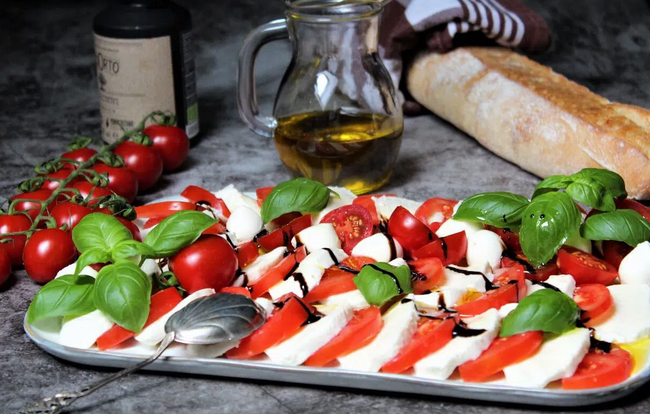

Tomate Mozzarella Salat

10 Min
simpel
06.03.2026
Zutaten für wieviel
- 4 Tomaten
- 2 Mozzarella Kugeln
- 3 EL Olivenöl
- Salz
- Pfeffer
- Frischer Basilikum
- Balsamico
Zubereitung
ca. 10 Minuten
Gesamtzeit ca. 20 Minuten
Tomaten waschen und in Scheiben schneiden. Mozzarella ebenfalls in Scheiben schneiden. Tomaten und Mozzarella abwechselnd auf einem Teller anrichten. Mit Olivenöl beträufeln und mit Salz und Pfeffer würzen. Frischen Basilikum und Balsamico darüber geben und servieren.